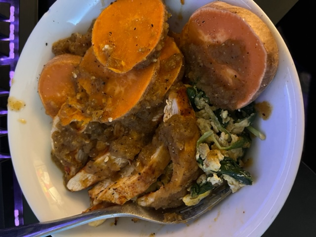

Back to Homepage
Back to Recipes
Chicken & Sweet Potato

Description:
What we have here is a simple but powerful meal. It's very well balanced, flavor-wise. Please ignore the egg & spinach, it was leftovers.
Ingredients:
- 1 medium sized skinless/boneless chicken breast
- 1 medium sized sweet potato
- Chicken seasoning
- Salt and pepper
- Homemade salsa
Steps:
- Slap that chicken down onto a cutting board, slice it hamburger way and season it with some "chicken" seasoning
- Next, we're going to drizzle a bit of extra virgin olive oil onto a hot pan and cook the chicken breast.
- Next, we will wash and cut the sweet potato into slices, placing them onto a microwave-safe plate and heat them up for 4 minutes.
- Now that our chicken breast is cooked, we can slice them into slices.
- Once the sweet potato is soft and lightly seasoned, we can enjoy with our chicken breast and some homemade salsa.
- For the most important step, enjoy!